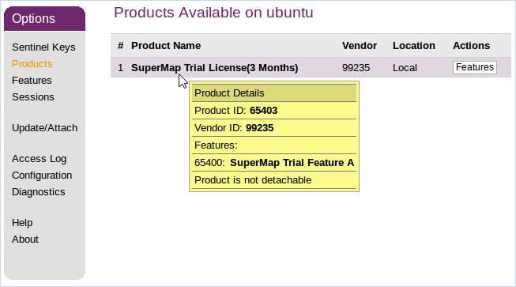

For running SuperMap iDesktop Cross normally, the license configuration is required. Both file license and hardware license are supported in Linux OS, but you must install the related driver first. All the verifications of licenses are executed by the driver.
1 Install license driver
After unzipping the tar packet of Cross, execute the installation under the directory support\SuperMap_License\support\aksusbd-2.4.1-i386 of the root directory. Please note: You must be root to install the license driver.
After going into above directory, the installation can be performed by following commands.
$ ./dinst
or
$ sh dinst
You can get a 90-day trial license to use SuperMap GIS 9D after installing the driver. If dinst has no executable permissions, please grant permissions to execute the following commands:
$ chmod +x dinst
When an “The 32bit support is missing …” error happens on a Linux 64-bit OS, you need to reload the installation disc to manually install a support library of 32-bit OS or download it from official website. Refer to the following list of support libraries that need to be installed.
libc6-i386 and ia32-libs (Ubuntu)
libstdc++-devel.i686, glibc.i686, libgcc.i686, libstdc++.i686, glibc-devel.i686 (RHEL, CentOS, OpenSUSE, SLES and OES)
glibc-32bit (OpenSUSE, SLES and OES)
２ Configure licenses
2.1 Configure a file license
Unlike GUI configuration on Windows, the file license are configured in Linux platform in the way of commands with /licensetool.sh command.
Enter the root directory of the package, execute the following command, you can view the command to configure the file license:
$ ./licensetool.sh
Go into the root directory of the application packet, configure the license in “software activation”, the detail steps are:
(1)Get local machine information, execute following commands and specify the path of the file restoring the information, under the specified path, there is a *.c2v file to be created.
$ ./licensetool.sh -create /path/\*.c2v
(2) Submit your machine information to “SuperMap Software Co., Ltd”.
Submit the file (*.c2v) produced in last step to “SuperMap Software Co., Ltd”, and a created license file (*.v2c) will be returned back to you for configuring the file license.
(3)Place your *. V2c official license file into a specified location, execute the following order:
$ ./licensetool.sh -update /path/\*.v2c
2.2 Configure a hardware license
Before configuring the license, please make sure you have the authorization permission of SuperMap Software Co., Ltd. If there is a configured license server on the same network segment, the license will be configured automatically; If there is a hardware key available in the current network environment (other network segments), follow the steps below to configure the license:
(1) Access http://localhost:1947 or http://local IP:1947 in a browser.
(2) Select Configuration in Options at left.
(3) Select “Access to Remote License Managers” at right.
(4) On Specify Search Parameters fill in license server IP of other network segment, click Submit.
(5) Wait for a few minutes, under Sentinel Keys on the left side of the Options you can see sentinel keys of this server.
You also can view the license status by executing the following command in the SuperMap iDesktop Cross root directory:
$ ./licensetool.sh -s
2.3 Apply for a trial license
(1) Generate an operation report
Execute the following command, and specify the path for saving the report:
$ ./licensetool.sh -report /path/\*.report
And then a *.report file is generated under the specified folder.
(2)Applying for a trial license
You can directly apply for a trial license in the Beijing SuperMap Software Co., Ltd. official website , “SuperMap Technology Resource Center” section. After the application you will receive a trial license:
If you apply for SuperMap GIS 7C series, you will receive a license file in *.lic7c format
If you apply for the SuperMap GIS 8C series, you will receive a license file in *.lic format.
If you apply for the SuperMap GIS 9D series, you will receive a license file in *.lic9d format.
(3) Make the trial license work
You can make the trial license effective by one of two ways:
Method 1: Place the trial license file under the opt directory of your OS, specifically: /opt/SuperMap/License/. Please note that the directory is granted read and write access. System will automatically use the license file of the directory without other configuration.
Method 2: Enter the SuperMap iDesktop Cross root directory, place your trial license file to the specified location, and then execute the following command:
$ ./licensetool.sh -update /path/\*.lic
or
$ ./licensetool.sh -update /path/\*.lic7c
3 Manage license information
You can view license status, update license, borrow/lend license, return back license and so on by managing license.
3.1 View license status
Execute the following command under the root directory to view status of your license.
$ ./licensetool.sh -s
The status information includes: product ID, the module ID, the product name, the license type (both the official version and the trial version), the number of licenses, and the license expiration time.
3.2 Update license
Specify the obtained official *.v2c license file to the file location, execute the following command:
$ ./licensetool.sh -update /path/\*.v2c
Following kinds of files are acceptable to update your license for different purposes.
License activation file (*.v2c), used to activate the official license you purchased on your computer. You need to acquire the local information to generate the license activation file firstly.
File license for 7C (*.lic7c), used to update the trial license of 7C series products on the current computer. You need to generate the running report of the computer firstly.
File license for 8C (*.lic), used to update the trial license of 8C series products on the current computer. You need to generate the running report of the computer firstly.
File license for 9D (*.lic9d), used to update the trial license of 9D series products on the current computer. You need to generate the running report of the computer firstly.
Certificate for lending license (*.h2r), used to lend a license of the network file license to the current computer.
Certificate for returning license (*.r2h), used to return a lent license to the license server, which is generated by the computer who borrows the license.
3.2 Borrow/Lend license
1. Generate a borrowed information file ( .id)
(\.id)
Run the following command on the server that needs to borrow the license to generate the borrow information file (* .id) for the machine:
$ ./licensetool.sh –id \*.id
2. Set lending license are allowed.
On the server set it is allowed to lend license:
Open a browser, enter http://localhost:1947 or http://local IP:1947 in the address bar;
click on Configuration in the Options panel at left to head to the configuration page
Click Detachable License at the top right of the page to open the lend configuration page.
Check Enable Detaching of Licenses to allow to lend license;
You can also set the lending restrictions according to the actual situation, such as Max. Detach Duration, etc.
3. Generate license file for lending
Run the following command on the server that lends the license to generate the loan document:
$ ./licensetool.sh -detach \[daycount\] \[productid\] \[idfile\] \[h2rfile\]
For example: (lend for 2 days, product ID is 1, server1.id that is the information file of server which will borrow license, mylicense.h2r that is the loan document generated)
$ ./licensetool.sh -detach 2 1 server1.id mylicense.h2r
Among them:
daycount, the number of maximum days that the license will be lent for.
productid, the ID of the lent product, you can view the product ID by http://localhost:1947 on the Products page.

idfile, the information file (*.id) of the server that needs to borrow the license.
h2rfile, the lent certificate file(* .h2r) generated.
4. Configure the borrowed license
After the server acquired the lent certificate file (*.h2r), execute following command:
$ ./licensetool.sh –u \*.h2r
3.4 Return back license
Run the following command on the borrowed server to get the returned certificate file (*.r2h):
$ ./licensetool.sh –cd KeyID canceldetachfile
First check the KeyID which is used to get the returned certificate file. The KeyID can be viewed from the license information file of the local machine, which can be generated by executing infofile command as follows, where pathname shows the output path for the license information file.
$ ./licensetool.sh –infofile /path/
After the above command was executed, a license information file ending in .xml are generated under the specified directory, of which, <attached>true</attached> indicates that the value of
Run the update command to finalize the returning of license.
$ ./licensetool.sh –update \*.r2h
You can find that the total number of licenses is automatically incremented by checking the license status command.
$ ./licensetool.sh –status